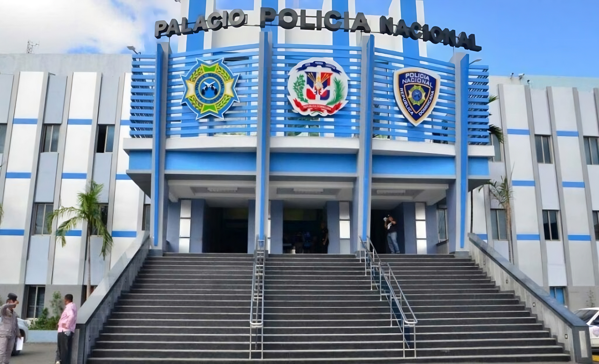

Quiénes Somos
Misión Constitucional
La Policía Nacional es un cuerpo armado, técnico, profesional, de naturaleza policial, bajo la autoridad del Presidente de la República, obediente al poder civil, apartidista y sin facultad, en ningún caso, para deliberar. La Policía Nacional tiene por misión: Salvaguardar la seguridad ciudadana; Prevenir y controlar los delitos; Perseguir e investigar las infracciones penales, bajo la dirección legal de la autoridad competente; Mantener el orden público para proteger el libre ejercicio de los derechos de las personas y la convivencia pacífica de conformidad con la Constitución y las leyes. (Art. 255, Constitución de la República Dominicana).
Con sus siguientes funciones:
- Preservar la vida, la integridad física y moral de las personas;
- Proteger y garantizar el libre ejercicio de los derechos y libertades de las personas en todo el territorio nacional;
- Mantener la paz interior, el orden público y social y la seguridad pública;
- Velar por el fiel y efectivo cumplimiento de las leyes y demás disposiciones generales, ejecutando las órdenes que reciba de las autoridades en el ámbito de sus respectivas competencias;
- Prevenir y controlar la delincuencia y criminalidad;
- Ejecutar las detenciones y capturas en los casos previstos por la ley;
- Vigilar y proteger los edificios, instalaciones públicas y parques, así como aquellos centros o establecimientos que por su interés lo requieran;
- Registrar y controlar los servicios a las entidades o servicios privados de seguridad;
- Vigilar el tránsito vehicular y el transporte de personas y mercancías en las vías públicas y velar por la seguridad vial;
- Custodiar todas las vías de comunicación terrestre, marítimas y aéreas, de frontera, puertos y aeropuertos, en coordinación con las instituciones que corresponda;
- Velar, conjuntamente con los organismos expresamente establecidos a esos fines, por la conservación del medio ambiente y los recursos naturales;
- Obtener, recibir y analizar todos los datos e informaciones que tengan interés para el orden y la seguridad pública, y estudiar, planificar y ejecutar métodos y técnicas de prevención y control de delincuencia;
- Auxiliar a los habitantes en caso de calamidad pública;
- Participar en los programas de orden social, cívico, cultural o educativo que disponga el Gobierno de la República;
- Proteger y proporcionar seguridad especial a dignatarios, diplomáticos y legisladores y los ex presidentes de las Cámaras Legislativas y cooperación con instituciones policiales y organizaciones policiales de otros países;
- Brindar especial protección y un trato apropiado a turistas, visitantes y parroquianos en las áreas de intenso flujo, como una forma de preservar esta industria y la buena imagen del país;
- Cualquier otra disposición que le sea atribuida por las leyes o las autoridades competentes.
Misión Institucional
Mantener las condiciones necesarias para el libre ejercicio de los derechos ciudadanos, a través de sistemas planificados de prevención e investigación bajo la autoridad competente, para el control del crimen, el delito y las contravenciones, que permita salvaguardar la seguridad ciudadana en todo el territorio nacional.
Visión
Ser reconocida como la institución líder en servicios de seguridad ciudadana, mediante una labor profesional, competente, confiable, transparente y efectiva, sustentada en el apoyo y la colaboración de la comunidad; comprometida con la Constitución, para garantizar la paz y la convivencia pacífica.
Valores
- Disciplina
- Integridad
- Vocación de Servicio
Principios Fundamentales de Actuación
- Dignidad Humana
- Respeto absoluto a la Constitución y las leyes de la República
- Integridad
- Eficiencia
- Objetividad
- Profesionalidad
- Eficacia
- Información
- Jerarquía y Subordinación
- Actuación Profesional
- Actuación de Oficio
- Cooperación
- Vocación de Servicio
- Atención a la Ciudadanía
- Confidencialidad
- Proactividad
Palacio de la Policía Nacional
